Sesión 12
Curso: R Aplicado a los Proyectos de Investigación
Percy Soto-Becerra, M.D., M.Sc(c)
InkaStats Data Science Solutions | Medical Branch
2022-10-28

Revisando filosofías de modelado
Agenda
Revisando filosofías de modelado
Linealidad y forma funcional
Selección de variables
¿A qué nos referimos con modelo estadístico?
“Modelos estadísticos resumen patrón de datos disponibles para el análisis. (Steyerberg, 2009)
“Una herramienta poderosa para desarollar y probar teorías mediante explicación causal, predicción o descripción.” (Shmueli, 2010)
“Una simplificación o aproximación de la realidad.” (Bumharm, Anderson, 2002)
“Un modelo representa, a menudo en una forma considerablemente idealizada, el proceso de generación de datos.” (Wikipedia)
“Reglas matemáticas simples derivadas de datos empíricos que describen la asociación entre un desenlace y algunas variables explicativas” (Dunkler et al, 2014)
Propósitos de modelos multivariadas
Explicar
Predecir
Describir
Explicar versus Predecir versus describir
Teoría sólida es necesaria.
- Interés en coeficientes e inferencia (intervalo de confianza/credibilidad, valor p, etc.)
Prueba y compara teorías causales existentes.
En medicina a menudo no hay teoría sólida.
- Se tienen diversos modelos etiológicos.
Interés en predicciones precisas de observaciones en nuevos pacientes o personas.
No preocupación acerca de causalidad.
- No tiene sentido hablar de confusión.
- Aunque algunos proponen ‘interpretatibilidad’ del modelo predictivo, el paradigma de caja negra funciona bien si el modelo predice bien.
Medicina:
- Modelos de predicción clínica para tamizaje, diagnóstico o pronóstico.
Interés en capturar la estructura de datos (patrones) parsimoniosamente.
¿Qué factores ‘afectan’ al desenlace y cómo?
- Con ‘afectar’ no estamos hablando de causalidad (contrafactuales).
Tipos de proceso de modelado
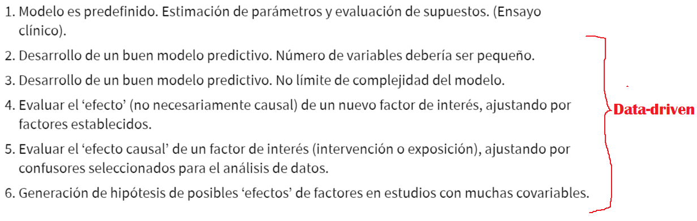¿Existe un verdadero modelo?
Un ‘modelo correcto’ = un ‘mecanismo generador de datos verdadero’.
Pro:
Aristóteles: “Naturaleza opera en el modo más simple posible’.
Newton: “No debemos admitir más causas de las cosas naturales que tales como verdaderas y suficientes para explicar su apariciones.’
¿Existe un verdadero modelo?
Un ‘modelo correcto’ = un ‘mecanismo generador de datos verdadero’.
Contra:
‘No aceptamos la noción de que hay un simple ’modelo verdadero’ en las ciencias biológicas.’ (Burnham & Anderson, 2002)
“Reconocemos que los modelos verdaderos no existe… Un modelo solamente reflejará patrones subyacentes y, por lo tanto, no deben confundirse con la realidad.” (Steyerberg, 2009)
“Todos los modelos son erróneos, pero algunos son útiles.” (Box)
Culturas estadísticas
La navaja de Ockham
- Guillermo de Ockhan fue un lógico del siglo XIV y fraile franciscano:
“Las entidades no deben multiplicarse innecesariamente.”
Cuando dos teorías en competencia hacen exactamenet las mismas predicciones, la teoría más simple es la mejor.
Si tienes dos soluciones igualmente probables, elige la más simple.
La explicación que requiere menos supuestos es la probablemente más correcta.
Principio de parsimonia
“Simplicidad es la última sofisticación.” (Leonardo Da Vinci)
Todo debería ser tan simple como sea posible, pero no más simple. (A. Einstein)
En resumen
Los modelos no son la realidad.
No existe tal cosa como un “modelo correcto”.
No hay un único modelo que finalmente explique la generación de datos.
Modelos pueden ser útiles:
Solamente para predicción.
Para entender asociaciones multidimensionales
Causalidad es un caso expecial:
Es un tipo de asociación que implica contrafactuales.
Compara predicciones que implican contrafactuales (¿Qué hubiera pasado si…?).
Si dos modelos tienen el mismo poder explicativo, preferiremos el más simple.
Modelos complejos puede ser más precisos que modelos más simples, pero son a menudo inútiles.
Linealidad y forma funcional
Agenda
Revisando filosofías de modelado
Linealidad y forma funcional
Selección de variables
Supuesto de linealidad
En GLM, el supuesto indica que \(g(E(y_i))\) es una
combinación linealde predictores \(x_p\).A menudo se confunde con que \(y_i\) y cada \(x\) deben tener forma de una línea.
En realidad, lo que queremos es que \(y_i\) y \(x\), teniendo en cuenta las otras \(x\) tenga forma de una línea.
El análisis bivariado de \(y_i\) y cada \(x\) es inadecuado para evaluar linealidad.
Sin embargo, algunos residuos sí permiten realizar esta evaluación.
Veamos una simulación en R.
Enfoques de selección de forma funcional
Basada en teoría
Rara vez se dispone de esto en investigación clínica.
Si uno conoce la forma teórica, puede plantear el modelo incluyendo esta forma.
Basada en datos (data-driven)
Usual en investigación clínica. Los datos permiten determinar la forma.
Dos paradigmas:
Ciega al desenlace (outcome).
Orientada por desenlace (outcome)
Forma funcional orientada por datos pero ciega al desenlace
Predefinir polinomios o splines es una forma de hacer esto.
La alternativa más flexible y robusta (por ende, popular) es usar splines (regresiones por partes).
Hay muchos tipos de spline y aún no está claro cuáles son mejores y por qué.
- Faltan más estudios comparativos de simulación.
En Bioestadística, los splines cúbicos restringidos han sido mejor estudiados y su comportamiento es mejor conocido, por lo que son preferidos.
- Frank Harrell propone seleccionar los nodos (knots) en base a cuantiles pre-definidos, de tal forma que este proceso sea ciego al desenlace y no induzca “asociaciones espurias”.
¿Splines?
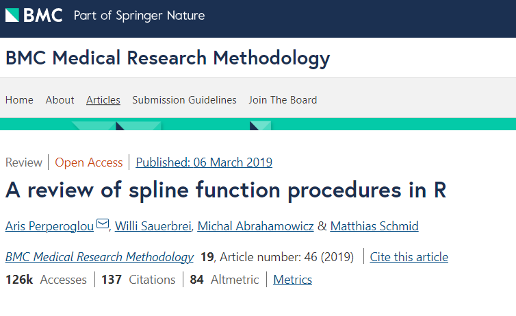¿Splines? (cont.)
- Permitan modelar formas no lineales
¿Splines? (cont.)
- Ejemplo de splines cúbicos restringidos
¿Splines? (cont.)
- Ejemplo de splines cúbicos restringidos
¿Splines? (cont.)
- Comparación con polinomios
¿Splines? (cont.)
- Paquetes de R
¿Splines? (cont.)
- Comparación entre diversos tipos de splines
¿Cómo usar splines en investigación clínica?
Las simulaciones muestran que pre-definir 3-5 nodos usando el esquema de cuantiles de Harrell permite modelar casi cualquier forma funcional comúnmente encontrada en la práctica clínica.
Harrell sugiera pre-definir los splines entr 3-5 nodos:
Menos nodos cuando el tmaaño de muestra o número de eventos / variable sea bajo.
Caso contrario, más nodos.
Harrell sugiere no simplificar el modelo, pero sí verificar que la forma funcional es razonablemente buena.
En caso sea muy compleja, no simplificar: esto introduce grados de libertad fantasma.
En caso sea muy simple (rara vez ocurre), se puede justificar complejizar un poco, sin embargo esto debe reportarse como una desviación y presentarse ambos análisis.
La idea es protegerse del p-hacking y el sesgo de inferencia post-seleccion de forma.
Forma funcional orientada por datos y por el desenlace
Aquí se introducen algoritmos de selección.
Entre los más populares en bioestadísticas tenemos a una modificación del algoritmo de stepwise (backward, forward o combinación) que selecciona tanto variables como forma funcional.
El algoritmo de selección basada en polinomios fraccionales es uno de los más reconocidos: mfp.
Forma funcional orientada por datos y por el desenlace
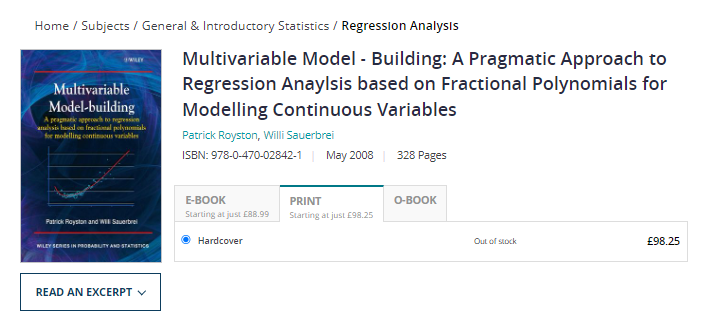Forma funcional orientada por datos y por el desenlace (cont.)
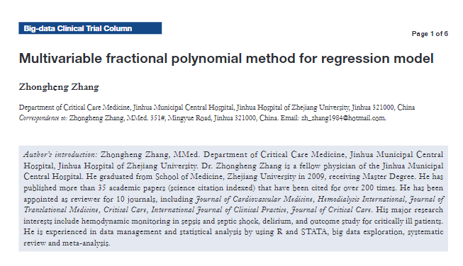Forma funcional orientada por datos y por el desenlace (cont.)
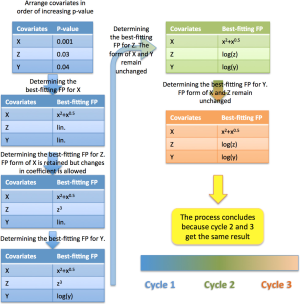Forma funcional orientada por datos y por el desenlace (cont.)
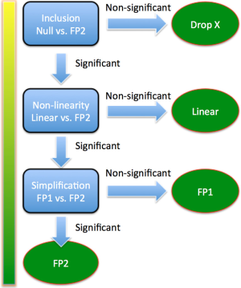Forma funcional orientada por datos y por el desenlace (cont.)
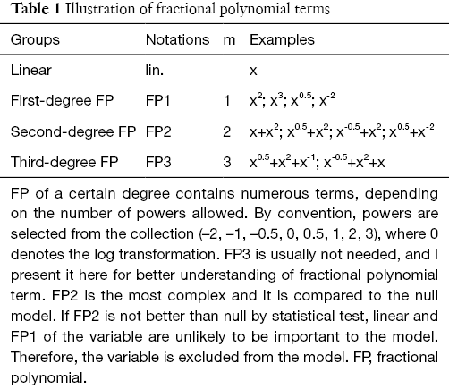Forma funcional orientada por datos y por el desenlace (cont.)
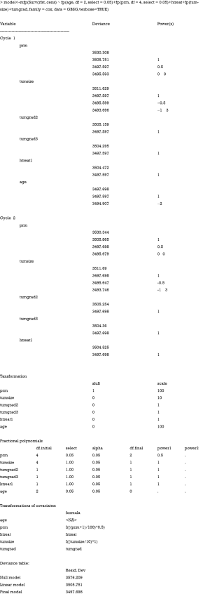Forma funcional orientada por datos y por el desenlace (cont.)
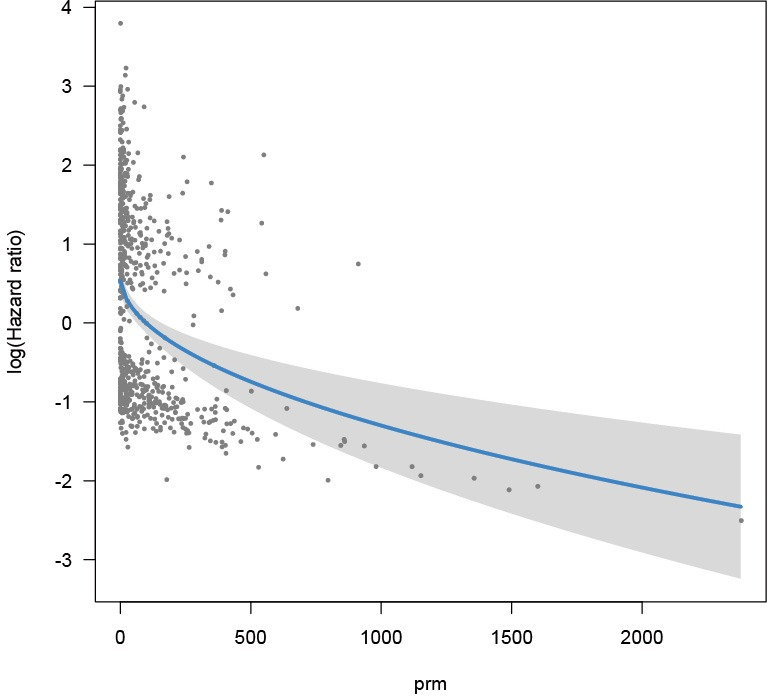Selección de variables
Agenda
Revisando filosofías de modelado
Linealidad y forma funcional
Selección de variables
Preselección de variables
Dado que no podemos medir todas las variables existentes, debemos preseleccionar qué variables mediremos o dispondremos.
Este enfoque no es estadístico, se basa en considerados teóricos y metodológicos:
Conocimiento teórico del tema.
Cronología
Costos de colectar mediciones
Disponibilidad oportuna de las variables
Calidad (errores de medición)
Otros: criterios basado en confusores, etc.
Disponibilidad en el conjunto de datos (datos perdidos)
Variabilidad (categorías raras)
Podemos recopilar un conjunto enorme de variables siempre que sea factible y potencialmente útil.
Diversos enfoques de selección de variables
Selección basada en teoría
Modelo completo
Selección basada en Grafo Acíclico dirigido (DAG)
Algoritmos de selección
Filtro univariado
Selección del mejor subconjunto
Selección hacia adelante (forward)
Selección hacia atrás (backward)
Cambio en estimado
Enfoque basados en teoría de información
Modelo completo
No realiza ningún procedimiento de selección basado en datos (data-driven).
Seleccionar, para cada variable, un nivel deseado de no-linealidad:
- Incluir transformación spline pre-definida
Variables deberían ser seleccionadas por ‘experticia’.
¿En qué filosofías de modelado se usan?
Inferencia causal:
Ensayos clínicos (es la norma según FDA, EMA y Cochrane y otras agencias regulatorias - El protocolo predefine todo y se cumple rigurosamente)
Estudios observacionales: El paradigma de DAG es un caso particular.
Modelado de factores pronóstico.
Modelo completo en inferencia causal de ensayos clínicos
Modelo completo en inferencia causal de ensayos clínicos (cont.)
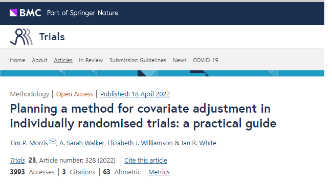
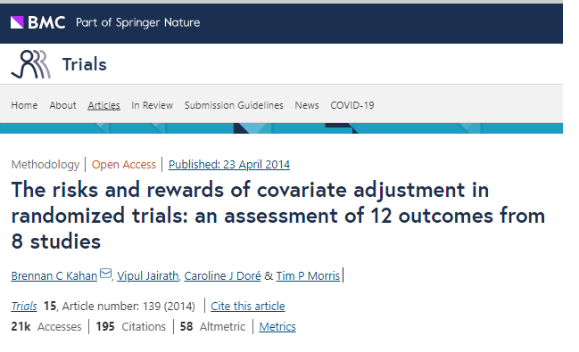
Modelo completo en inferencia causal de estudios observacionales
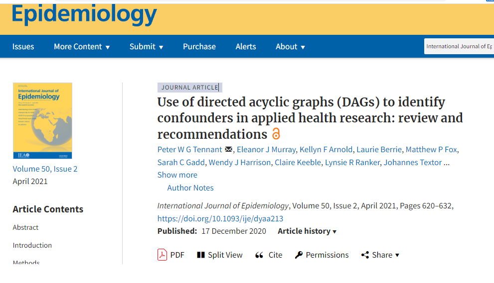
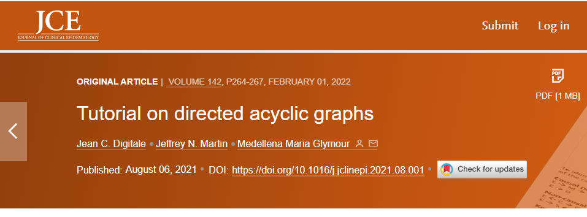
Modelo completo en inferencia causal de estudios observacionales (cont.)
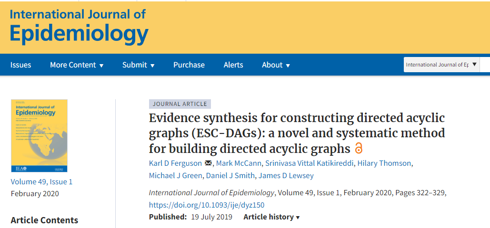
Filtro univariable
Todavía muy usado en investigación biomédica.
Selecciona una univel de significancia \(\alpha\) (p. ej., 0.20 o 0.157).
Realiza modelos univariados de todas las predictoras de interés.
El modelo multivariable solo debe incluir a las variables cuyo modelo univariado tenga un \(\text{valor p} < \alpha\)
Algunos combinan con
eliminación backwardsubsecuente.
NUNCA usar filtro univariable!!
Aunque es un enfoque sencillo, es MUY PROBLEMÁTICO!!
El efecto univariado de \(X_1\) en \(Y\) es a + bc:
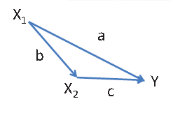
- La selección univariada solamente funciona si las covariables no están correlacionadas!!
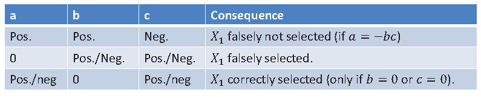
Selección de mejor subconjunto
Original
Si hay \(p\) covariables, se pueden realizar \(2^p\) regresiones.
Seleccionar el modelo que tenga el menor AIC.
Modificación
Pre-especifica un pequeño número (4-20) de modelos plausibles.
Selecciona aquellos que tengan el \(AIC < AIC_{min} + 2\)
Realiza inferencia multimodelo en los modelos selecciondos.
En la práctica
- Aproximada por procedimientos paso a paso (stepwise).
Selección hacia adelante (forward)
Selecciona un nivel de significancia \(\alpha_1\)
‘Estima’ un modelo nulo.
Repite:
- Mientras el término más significativo tenga \(p < \alpha_1\), añádelo y re-estima.
Variante: stepwise forward
Selecciona \(\alpha_1\) y \(\alpha_2\).
Repite:
Mientras el término más significativo tenga \(p < \alpha_1\), añádelo y re-estima.
Si el término menos significativo tiene \(p \geq \alpha_2\), remuévelo y re-estima.
Selección hacia atrás (bacward)
Selecciona un nivel de significancia \(\alpha_1\)
‘Estima’ un modelo nulo.
Repite:
- Mientras el término menos significativo tenga \(p \geq \alpha_1\), remuévelo y re-estima.
Variante: stepwise backward
Selecciona \(\alpha_1\) y \(\alpha_2\).
Repite:
Mientras el término menos significativo tenga \(p \geq \alpha_1\), remuévelo y re-estima.
Si el término más significativo tiene \(p < \alpha_2\), añádelo y re-estima.
Backward versus forward
Aunque a veces coinciden, los resultados de estudios de simulación se inclinan a favor de backward.
Backward retiene más variables que realmente se relacionan con el desenlace.
Aunque, como todo método de selección, puede:
Omitir variables importantes.
Incluir variables no importantes.
Dado que ningún método de selección es perfecto, se opta por el que menos problemas muestra.
El consenso en Bioestadística es usar
backward elimination.
Augmented backward elimination
Los DAG son solo modelos causales teóricos, podrían estar equivocados y tenemos incertidumbre sobre ellos.
- Si hay muchas variables confusoras por las que ajustar en relación al número de datos, tendríamos un problema de hiperdimensionalidad.
Propuesto por Dunkler et al, 2014 para lidiar con muchas variables confusoras según DAG.
- Busca reducir el número sin introducir sesgo de confusión, pero mejorando precisión estadística.
Modificación del criterio del cambio en estimado al que se le agrega eliminación backward.
- Usa un cambio en estimado estandarizado
La eliminación backward se fija a un \(\alpha_2\).
Mantiene variables en el modelo cuyo máximo valor de cambio en estimado estandarizado es mayor que cierto valor \(\tau\).
Augmented backward elimination (cont.)
- Los estudios de simulación muestran performance similares a los del modelo completo, pero con menos variables seleccionadas.
Opiniones sobre selección de variables en Bioestadística
- para modelos enfocados en predicción y explicación:
¿Cuál es el mejor procedimiento?
Depende de información disponible y conocimiento deseado.
Conjunto de datos
¿Pequeño o grande?
¿Muchos parámetros a estimar o pocos?
¿La meta es un modelo suficientemente bueno?
No seleccionar o seleccionar solo pocos modelos cuando los datos sean de tamaño pequeño o moderado.
AIC provee el mejor modelo aproximado enrte un conjunto candidatos de modelos.
¿La meta es un modelo ‘verdadero’?
Selección más estricta (Backward / valor-p) solo en muestras grandes.
Importancia de conocimiento teórico
Incorporar conocimiento experto es como incrementar el tamaño de muestra.
Puede ser vista como una forma informal de procedimiento Bayesiano.
- De hecho, bayesianismo lo implementa formalmente.
Es similar a seleccionar en un conjunto de datos (teoría) y estimar en otro conjunto de datos (muestra de estudio).
Evita el sesgo de sobreestimación condicionada a selección: ‘testimation bias’.
Conocimiento experto también es útil en preselección de variables, para codificarlas, interacciones, transformaciones / forma funcional, etc.
Estrategia recomendada por este curso
En nuestro práctica habitual:
- trabajamos con datos del mundo real.
Tratemos de obtener la mayor cantidad de información clínica teórica relevante de nuestros colaboradores para determinar el conjunto inciial de variables (pre-selección).
- No confundir: Conocimiento experto \(\neq\) Selección univariable.
Estrategia recomendada por este curso (cont.)
No usen algoritmos de selección en muestras pequeñas: Usar modelo completo pre-definido o modelos alternativos pre-definidos en protocolo.
En descripción a menudo sexo y edad (y, por ahí una que otra variable sociodemográfica) son importantes.
Si hay muchas más variables, predefinelas.
Si el tamaño de muestra es grande, usar backward elimination para encontrar un modelo parsimonioso.
- \(\alpha\) debería ser fijado de acuerdo al tamaño de muestra / eventos por variable. (más allá del alcance de este curso)
Debería evaluarse la estabilidad de la selección de variables (más allá del alcance de este curso):
- Bootrapping es muy útil y es, de hecho, el más recomendado para ser usado.
La selección de variables se debe basar en modelo teórico causal.
- Los DAG son las herramientas más usadas y con más teoría desarrollada.
La teoría médica no es tan fuerte, suele tener abundantes vacíos de conocimiento:
Predefina varios DAG alternativos en el protocolo y comparelos como análisis de sensibilidad.
Si hay muchas variables en relación al tamaño de muestra o a los eventos por variale, entonces augmented backward elimination podría ser una opción (aunque recientemente hay evidencia de que tiene problemas también).
Si hay un factor pronóstico de interés, el modelado debe basarse en teoría.
Predefina uno o más modelos completos.
Variables de ajuste deben ser otros factores pronósticos ya reconocidos por la literatura.
Si se busca identificar, exploratoriamente, potenciales factores pronósticos, recomendaciones similares a modelado descriptivo.
Si n es pequeño o razón eventos por variable pequeña: predefina modelos.
Si n es grande: puede usar backward elimination.
Estrategia recomendada por este curso (cont.)
Más allá del alcance de este curso
Diversas estrategias pueden ser usadas, todas ellas buscan un balance entre sesgo y varianza.
- Overfitting es una preocupación importante.
Otro métodos cobran más relevancia:
Métodos de penalización: lasso, elastic net, ridge
Estrategias de remuestreo para validación interna: bootstrapping, validación cruzada, etc.
Más allá del alcance de este curso.
Combina elementos de desarrollo/validación de modelos predictivos y elementos de inferencia causal.
En resumen
Si tamaño pequeño, selección por teoría de modelo completo.
Si tamaño grande, depende del objetivo de modelado.
Modelos descriptivos:
- Muchas variables y n grande: backward elimination.
Modelos de inferencia causal:
- Selecciona por DAG, si muchas variables ¿augmented backward elimination?
Modelos de predicción clínica:
Factor pronósitco de interés: Modelo completo basado en teoría.
Factores pronósticos a identificar: Similar a modelo descriptivo.
Modelos predictivos: más allá del alcance de este curso.
Selección de variables y forma funcional en R
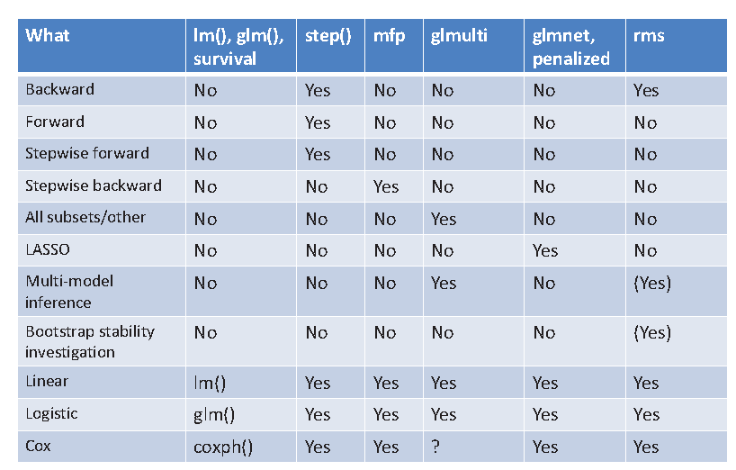
@psotob91
https://github.com/psotob91
percys1991@gmail.com
R Aplicado a los Proyectos de Investigación - Sesión 12